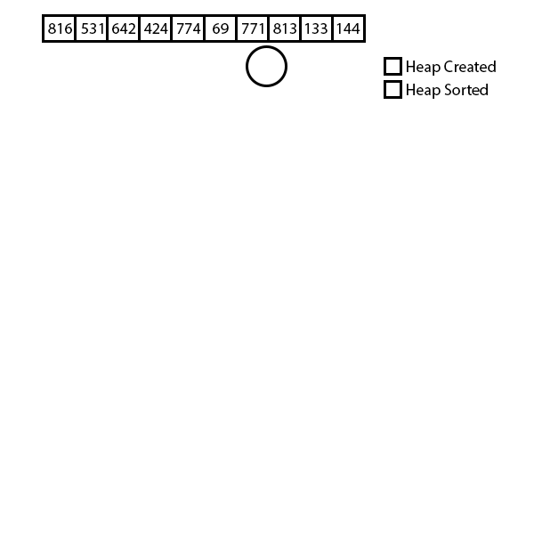
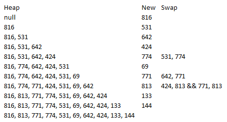
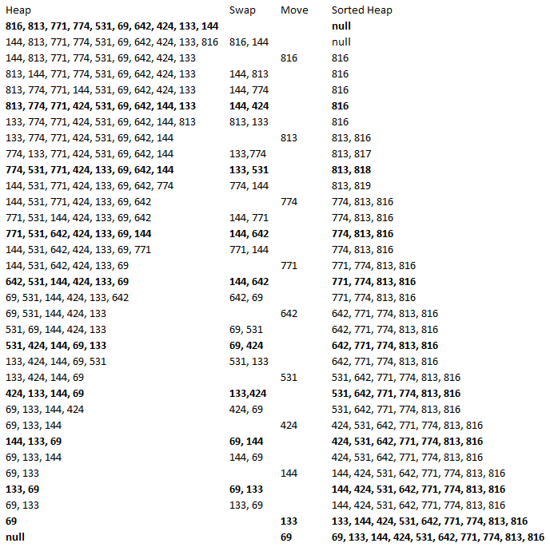

Week 6 Ex. 4: Generate 10 random ints in the range 0 to 1000. Create a heap with these values. Pictorially show the history of HeapSort at each step.
Random Numbers Generated: 816 531 642 424 774 69 771 813 133 144
  